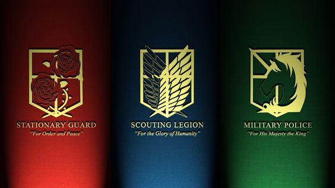

心臓を捧げよ
La historia de Shingeki no Kyojin nos traslada a una época en la que la humanidad ha estado al borde de la extinción debido a la existencia de los titanes. Unos seres gigantes aparentemente sin inteligencia cuyo objetivo no es otro que devorar humanos a pesar de no necesitarlos para sobrevivir. Los pocos supervivientes han levantado tres muros más altos que cualquier titán, donde viven pacíficamente sin el miedo de ser devorados por los gigantes. La humanidad ha vivido tranquila durante más de 100 años hasta que en el año 845 aparece de la nada un titán más alto que los muros construidos para protegerse y crea una brecha en uno de ellos permitiendo que todos los titanes se abran paso hacia el interior. En ese momento, la humanidad recibe el recordatorio de que viven con miedo a ser devorados por los titanes.
La historia está ambientada en la isla Paradis, ubicada al noreste del país de Marley, en donde Eren Jaeger vive con su familia (entre ellos su hermana adoptiva Mikasa Ackerman) y su mejor amigo Armin Arlert. Su pueblo colinda con la Muralla María, la más externa del Reino de las «tres murallas. Estos enormes muros fueron construidos cien años atrás, con el fin de protegerse de los «titanes», criaturas de entre tres y sesenta metros de alto que casi aniquilaron a la humanidad. Además de su gran tamaño, los titanes se caracterizan por su estructura corporal parecida a la de los humanos, a quienes devoran de forma instintiva.